HDMI时钟显示实验#
实验Vivado工程为“hdmi_rtc_char”。
本章在字符显示实验基础上，通过阅读DS1302芯片手册，了解DS1302操作时序和相关寄存器，然后设计程序将DS1302 RTC时间通过HDMI显示出来，类似于一个电子钟。
实验原理#
RTC（Real-Time Clock)实时时钟为系统提供一个可靠的时间，并且在断电的情况下，RTC实时时钟也可以通过电池供电，一直运行下去。RTC通过类SPI总线向FPGA传送8位数据（BCD码）。数据包括秒，分，小时，日期，天，月和年。在本实验中我们将读取RTC的时,分,秒的数据并在数码管中显示时间。
硬件介绍#
开发板上RTC设计采用DALLAS公司的低功耗实时时钟芯片DS1302, DS1302的VCC2为主电源，VCC1为后备电源。在主电源关闭的情况下，也能可以通过电池保持时钟的连续运行。DS1302外接32.768kHz晶振为RTC电路提供振荡源。 RTC部分的原理图如下图所示：
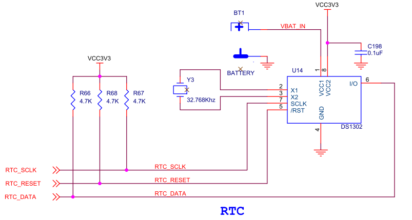DS1302的时序和控制#
写数据时序#
其接口部分类似于SPI接口，但不同之处是其数据接口是双向的。DS1302芯片写操作的时序图。第一个字节是“访问寄存器的地址”，第二字节是“写数据”。在写操作的时候，都是“上升沿有效”，然而还有一个条件，就是CE（/RST）信号必须拉高。（数据都是从LSB开始发送，亦即是最低位开始至最高位结束）。
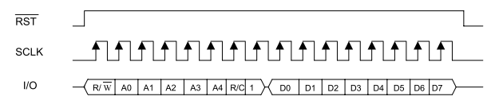DS1302写时序
读数据时序#
基本上和写操作的时序图大同小异，区别的地方就是在第二个字节是“读数据”的动作。第二字节读数据开始时，SCLK信号都是下降沿送出数据，这个时候可以使用上升沿读取数据。CE（/RST）信号同样是必须拉高。（第一节数据是从LSB开始输出，第二节数据是从LSB开始读入）。
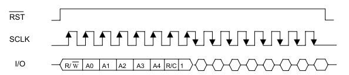DS1302读时序
命令格式和寄存器#
无论是读操作还是写操作，在时序图中，第一个字节都是“访问寄存器的地址”，然而这一字节数据有自己的格式。
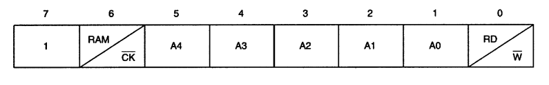BIT 7 固定。 BIT 6 表示是访问寄存器本身，还是访问RAM空间。 BIT 5 到BIT1 表示是寄存器或RAM空间的地址。 BIT 0 表示是访问寄存器本身是写操作，还是读操作。
下图是DS1302的寄存器地址和数据格式
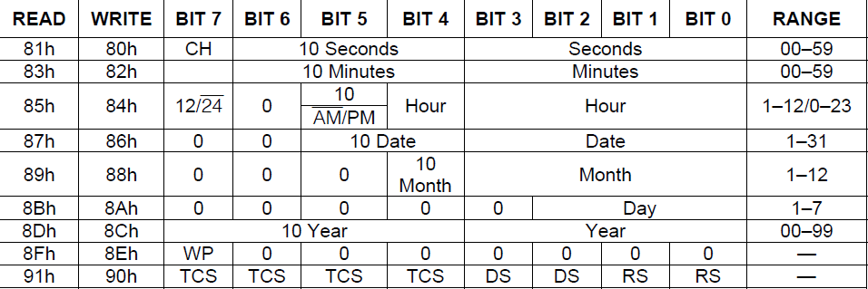程序设计#
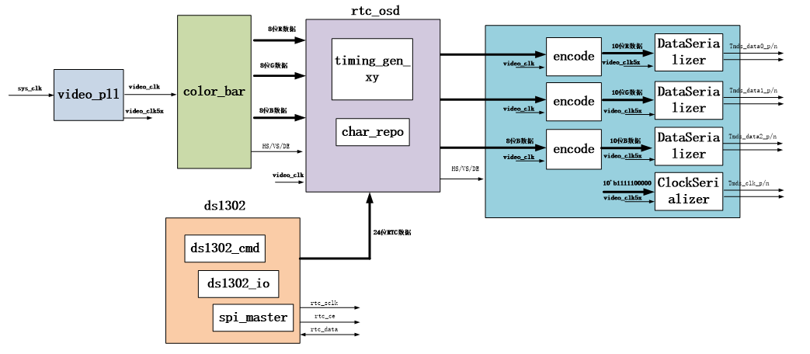DS1302读写设计#
通过分析DS1302读写时序，可以看出和SPI时序类似，只不过数据输出和输入分时复用了，spi master状态机设计，主要完成一个字节spi数据的读写，由于是全双工的，写一个字节的同时也读一个字节。首先空闲状态“IDLE”接收到写请求后进入“DCLK_IDLE”状态，这个状态为spi时钟沿变化保持一定的时间，用来控制spi时钟的周期，然后进入spi时钟沿的变化状态，一个字节上升沿和下降沿一共16个数据沿。在最后一个数据沿进入“LAST_HALF_CYCLE”状态，为让最后一个沿也保持一定的时间，再进入应答状态，完成一次写请求。
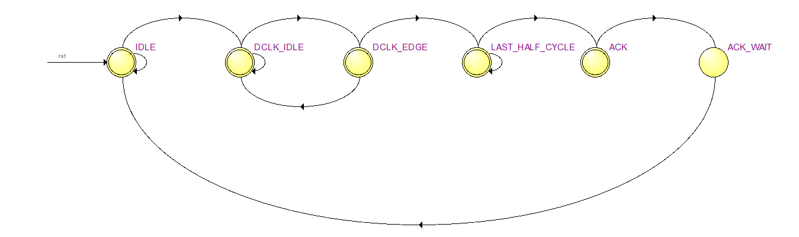spi master模块状态图
spi_master模块中模拟了一个spi时钟，在状态机进入到‘DCLK_EDGE’时进行翻转
//SPI clock edge counter
always@(posedge sys_clk or posedge rst)
begin
if(rst)
clk_edge_cnt <= 5'd0;
else if(state == DCLK_EDGE)
clk_edge_cnt <= clk_edge_cnt + 5'd1;
else if(state == IDLE)
clk_edge_cnt <= 5'd0;
end
信号名称 |
方向 |
说明 |
|---|---|---|
sys_clk |
in |
时钟输入 |
rst |
in |
异步复位输入，高复位 |
nCS |
out |
spi 片选信号，等于nCS_ctrl。 |
DCLK |
out |
spi 串行时钟 |
MOSI |
out |
spi串行数据输出 |
MISO |
in |
spi串行数据输入 |
CPOL |
in |
Clock Polarity，spi时钟的极性 0：空闲状态为0 1：空闲状态为1 |
CPHA |
in |
Clock Phase，spi时钟的相位， 0：第一个沿采样， 1：第二个沿采样 |
nCS_ctrl |
in |
nCS控制 |
clk_div |
in |
spi时钟频率控制 spi时钟=系统时钟/(2*（2+ clk_div）) clk_div 最小值可以为0，当为0时，spi时钟是系统时钟的1/4 |
wr_req |
in |
写一个字节请求 |
wr_ack |
out |
写应答，高有效 |
data_in |
in |
数据 |
data_out |
out |
返回的数据，当写应答时有效 |
spi master端口说明
ds1302_io模块完成DS1302寄存器读写控制，状态机如下图所示。
状态“S_IDLE”空闲状态，收到读写寄存器请求写进入“S_CE_HIGH”状态，将CE拉高，然后根据请求类型，进入读（S_READ）或写状态(S_WRITE)。
“S_WRITE”状态下一个状态进入写地址状态“S_WRITE_ADDR”,再进入写数据状态“S_WRITE_DATA”，完成一个寄存器的写入，最后应答，拉低CE。
“S_READ”状态下一个状态进入读地址状态“S_READ_ADDR”,再进入读数据状态“S_READ_DATA”，完成一个寄存器的读取，最后应答，拉低CE。
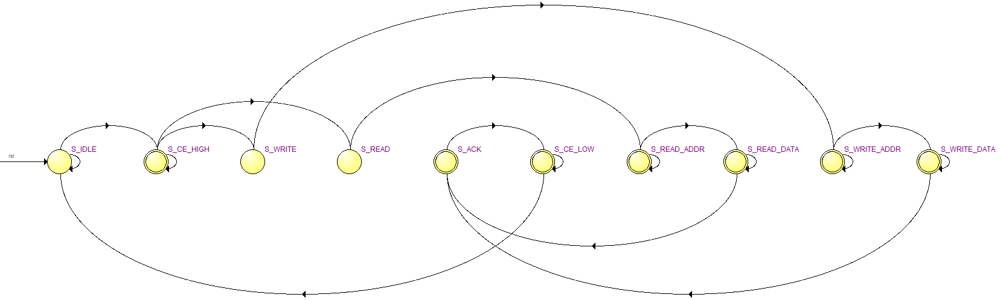ds1302_io状态机
信号名称 |
方向 |
说明 |
|---|---|---|
clk |
in |
时钟输入 |
rst |
in |
异步复位输入，高复位 |
ds1302_ce |
out |
DS1302 CE，高有效 |
ds1302_sclk |
out |
DS1302串行时钟 |
ds1302_io |
inout |
DS1302数据 |
cmd_read |
in |
读寄存器请求，发出请求时准备好地址 |
cmd_write |
in |
写寄存器请求，发出请求时准备好地址和数据 |
cmd_read_ack |
out |
读寄存器应答，应答时读取数据有效 |
cmd_write_ack |
out |
写寄存器应答 |
read_addr |
in |
读寄存器地址 |
write_addr |
in |
写寄存器地址 |
read_data |
out |
读出的数据 |
write_data |
in |
写寄存器数据 |
ds1302_io端口
ds1302模块主要完成时间寄存器的读写控制，状态机状态较为简单。
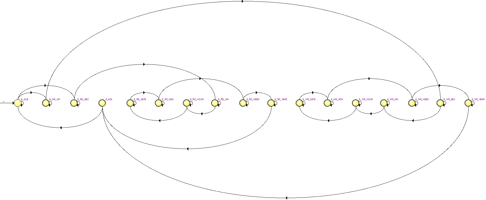ds1302模块状态机
信号 名称 |
方 | 说明 向 | |
|
|---|---|---|
clk |
i n |
时钟输入 |
rst |
i n |
异步复位输入，高复位 |
ds13 02_ce |
o u t |
DS1302 CE，高有效 |
d s1302 _sclk |
o u t |
DS1302串行时钟 |
ds13 02_io |
i n o u t |
DS1302数据 |
writ e_tim e_req |
i n |
ds1302写时间请求，请求 发出时，时间数据write_second、write_minute、write_hour 、write_date、write_month、write_week、write_year要有效 |
writ e_tim e_ack |
o u t |
写时间请求应答 |
wr ite_s econd |
i n |
写时间：秒，BCD码，00-59 |
wr ite_m inute |
i n |
写时间：分，BCD码,，00-59 |
write _hour |
i n |
写时间：时，BCD码,，00-23 |
write _date |
i n |
写时间：日，BCD码,，01-31 |
write _ month |
i n |
写时间：月，BCD码,，01-12 |
write _week |
i n |
写时间：周，BCD码,，01-07 |
write _year |
i n |
写时间：年，BCD码,，00-99 |
rea d_tim e_req |
i n |
读时间请求 |
rea d_tim e_ack |
o u t |
读时间请求应答 |
r ead_s econd |
o u t |
读时间：秒，BCD码，00-59 |
r ead_m inute |
o u t |
读时间：分，BCD码,，00-59 |
read _hour |
o u t |
读时间：时，BCD码,，00-23 |
read _date |
o u t |
读时间：日，BCD码,，01-31 |
read_m onth |
o u t |
读时间：月，BCD码,，01-12 |
read _week |
o u t |
读时间：周，BCD码,，01-07 |
read _year |
o u t |
读时间：年，BCD码,，00-99 |
ds1302模块端口
ds1302_test模块主要CH状态检测，CH位于秒寄存器的BIT7位，上电后首先读取时间，判断秒寄存器的CH状态，如果为高，表示DS1302暂停，状态机进入“S_WRITE_CH”，将CH写0，并将一个初始时间写入，然后循环不断的读取时间寄存器。
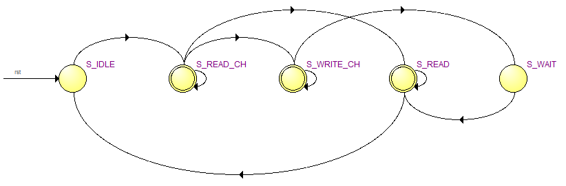ds1302_test状态机
信号名称 |
方向 |
说明 |
|---|---|---|
clk |
in |
时钟输入 |
rst |
in |
异步复位输入，高复位 |
ds1302_ce |
out |
DS1302 CE，高有效 |
ds1302_sclk |
out |
DS1302串行时钟 |
ds1302_io |
inout |
DS1302数据 |
read_second |
out |
时间：秒，BCD码，00-59 |
read_minute |
out |
时间：分，BCD码，00-59 |
read_hour |
out |
时间：时，BCD码，00-23 |
read_date |
out |
时间：日，BCD码，01-31 |
read_month |
out |
时间：月，BCD码，01-12 |
read_week |
out |
时间：周，BCD码，01-07 |
read_year |
out |
时间：年，BCD码，00-99 |
ds1302_test端口
字符叠加设计#
参考前面字符叠加实验，由于前面的实验字符是静态的，而本节需要将RTC的数据动态的显示出来，因此一个字符显示区域的内容是可变的，我们需要做字符库。也就是0~9以及分隔符”:”，考虑到字符较多，如果放在一个ROM里不容易调用。因此不再用例化ROM的方式，而是采用case语句制作字符库char_repo.v。比如在下面的图中即是数字0的字符库表达式。
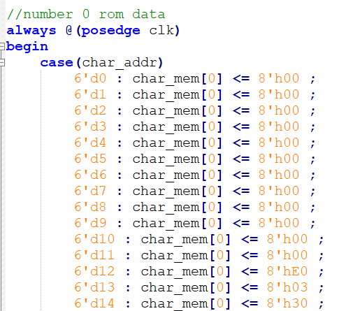至于字符库的数据也是由“FPGA字模提取”软件产生的，点阵宽x高为16x32，也就是64个字节。
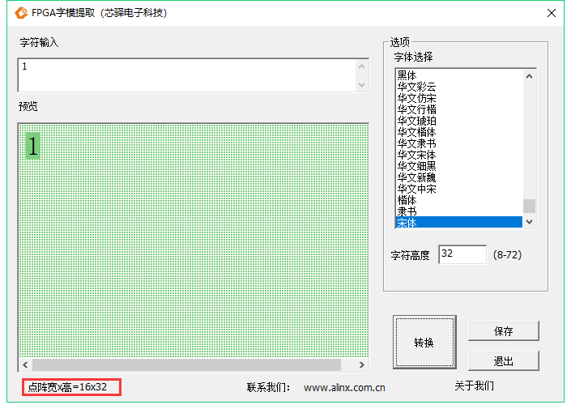程序中的char_addr_sel用来选择用哪个字符，0~9对应数字0~9，10对应“：”
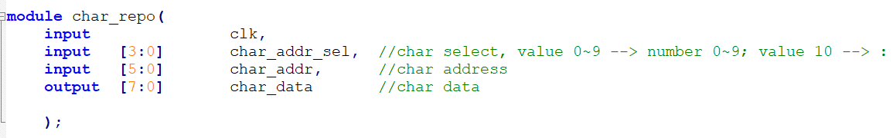信号名称 |
方向 |
说明 |
|---|---|---|
clk |
in |
时钟输入 |
char_addr_sel |
in |
用来选择字符，0~9对应数字0~9，10对应”:” |
char_addr |
in |
字符数据地址 |
char_data |
out |
字符数据 |
char_repo模块接口信号
rtc_osd.v是用来将RTC的数据叠加到彩条上的，并设置了以下一些参数，由于一个字符宽度是16，也就是16个像素点，因此将两个字符间隔设置为16。
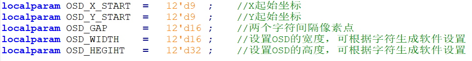由于时分秒加上分隔符共8个字符，因此产生出八个显示有效区域
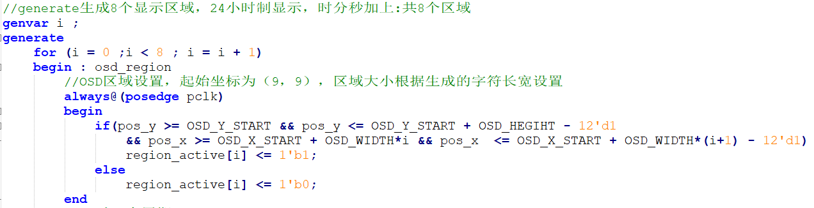根据RTC数据值，进行字符选择信号的译码
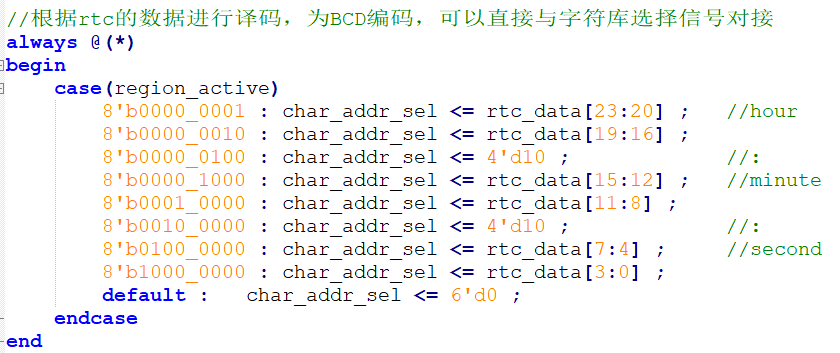信号名称 |
方向 |
说明 |
|---|---|---|
rst_n |
in |
异步复位输入,低复位 |
pclk |
in |
外部时钟输入 |
rtc_data |
In |
RTC数据，24bit，分别为时分秒数据 |
i_hs |
in |
行同步信号 |
i_vs |
in |
场同步信号 |
i_de |
in |
数据有效信号 |
i_data |
in |
color_bar数据 |
o_hs |
out |
输出行同步信号 |
o_vs |
out |
输出场同步信号 |
o_de |
out |
输出数据有效信号 |
o_data |
out |
输出数据 |
rtc_osd模块信号
实验现象#
连接好下载线，HDMI线，将程序下载到板子上以后，可以看到HDMI显示器背景为彩条，在左上方会显示时间，每秒会变一下。

AX7020/AX7010硬件连接图
纽扣电池型号为CR1220，安装时注意正极朝上，取下时用镊子拨动黄色弹片，即可弹出电池。
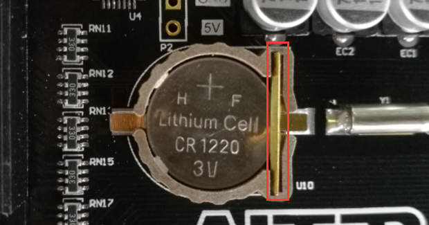 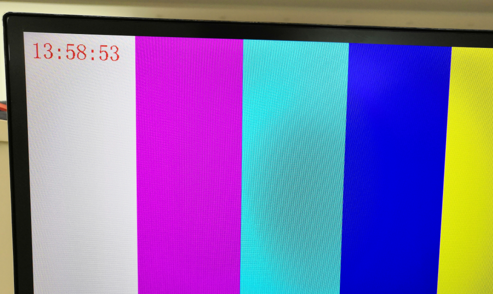